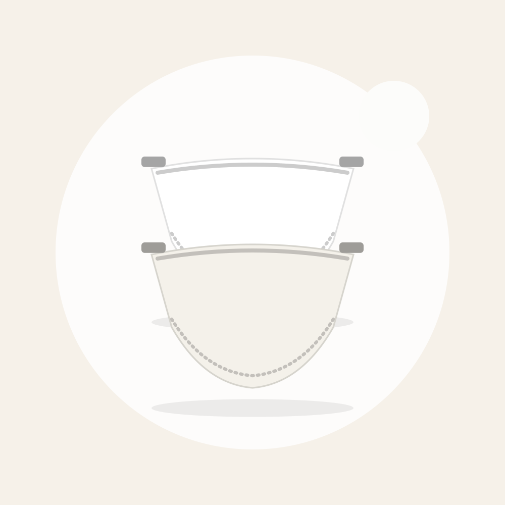
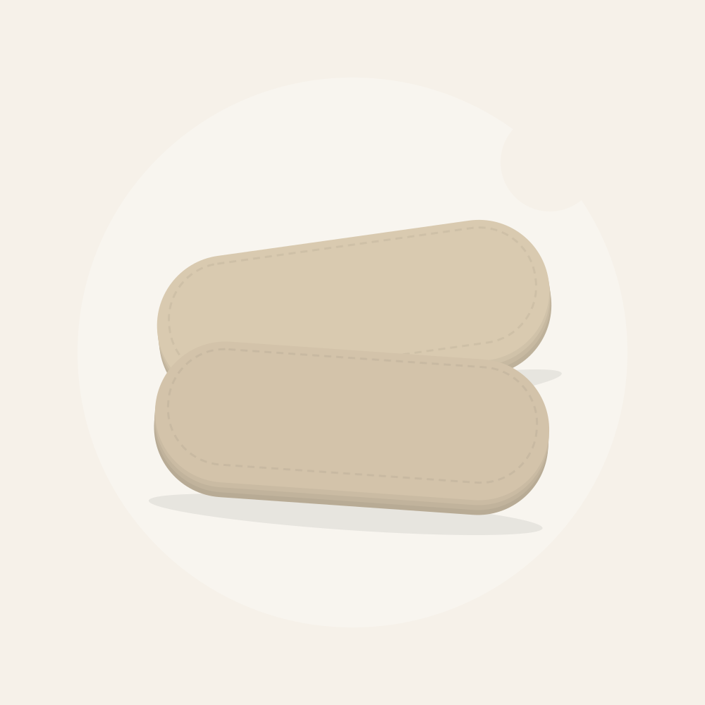
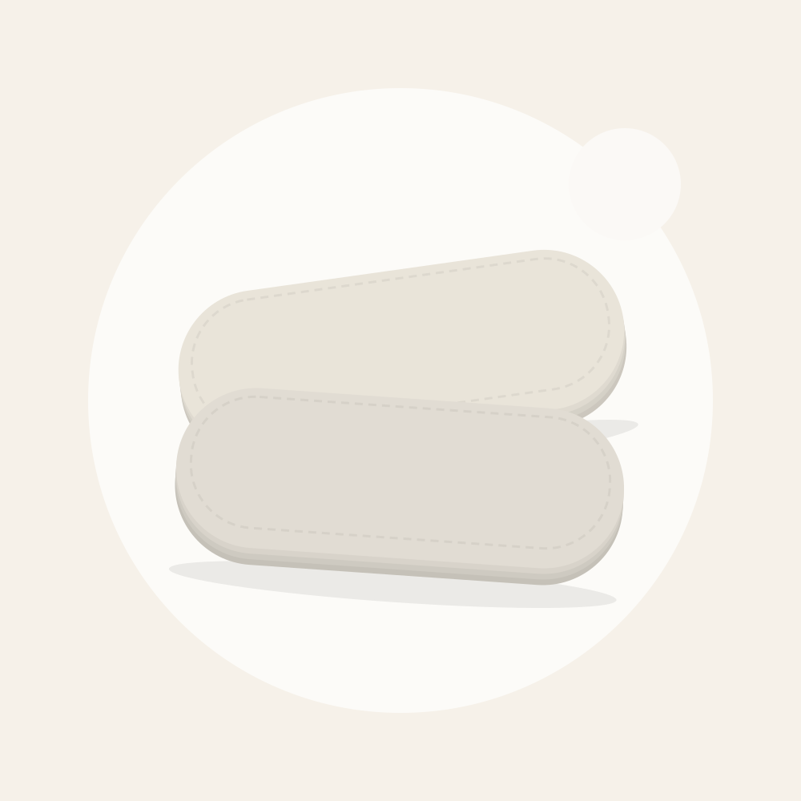
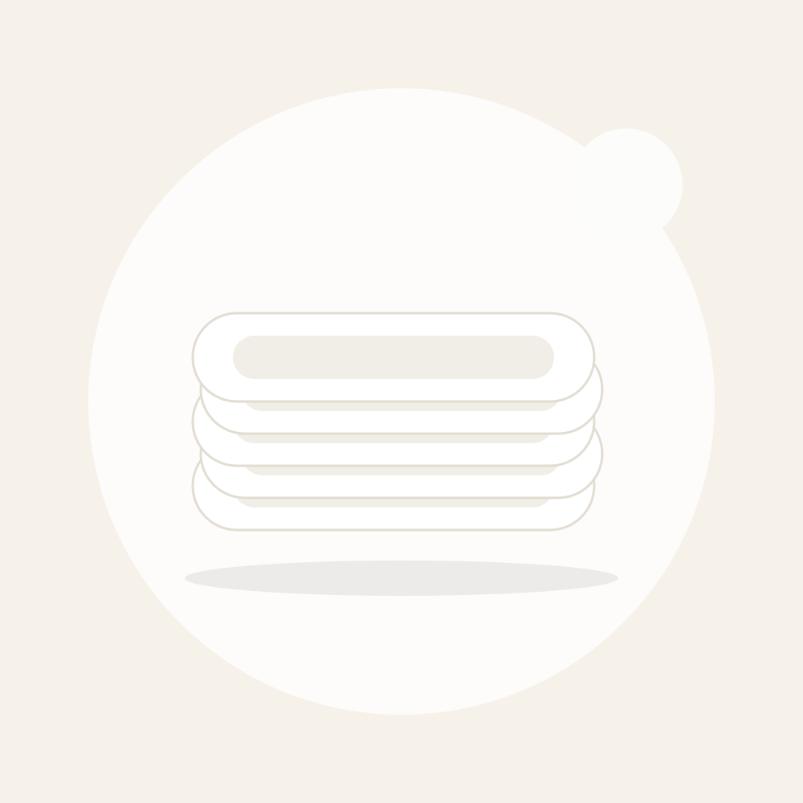
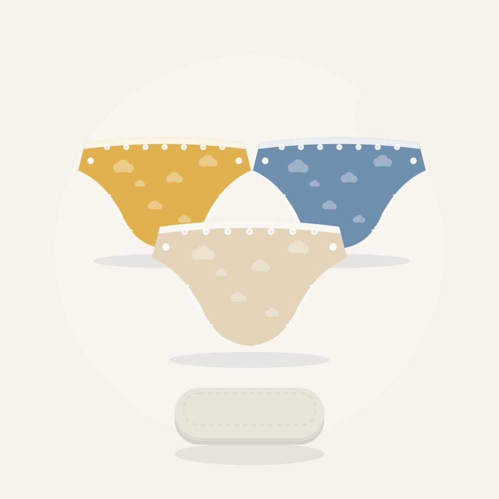
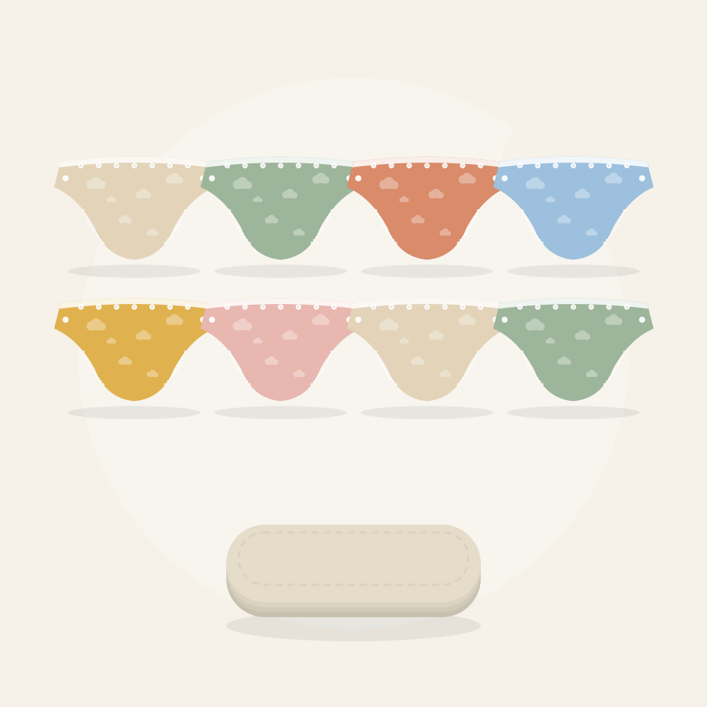
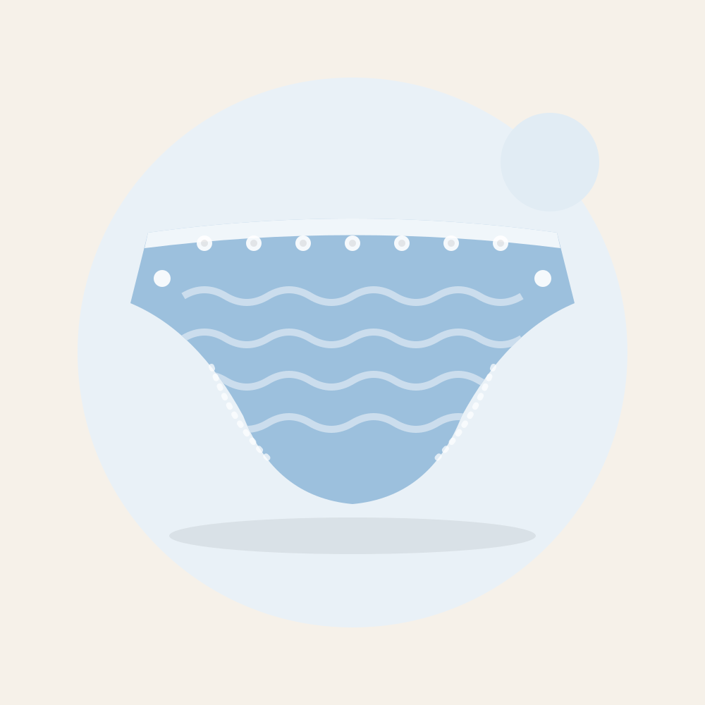

Couche hybride
Couche lavable hybride Washie Classic
La couche lavable aussi simple qu'une jetable : une culotte douce avec poche étanche intégrée, on glisse l'absorbant, on ferme, c'est prêt.
32,00 €XS · S · M · L · XL
17 produits pour équiper bébé de 2 à 21 kg : couches hybrides, culottes à poche détachable, absorbants lavables et jetables, kits, bain, apprentissage et entretien.
La couche lavable aussi simple qu'une jetable : une culotte douce avec poche étanche intégrée, on glisse l'absorbant, on ferme, c'est prêt.
Une culotte pour 2 à 3 changes : seule la poche étanche détachable se remplace. Moins de linge, séchage express.

Les poches étanches détachables à clipser dans la culotte Switch. On remplace la poche, on garde la culotte.

L'absorbant du quotidien : 3 épaisseurs de microfibre qui captent vite, sèchent vite. Pour 3 à 4 h de journée.

4 épaisseurs pour les longues siestes et la nuit : 6 à 12 h d'absorption selon les bébés.

Version fibre naturelle : coton biologique non blanchi, doux pour les peaux sensibles.

Un supplément fin à glisser sous l'absorbant pour gagner 1 à 2 h, la nuit ou chez la nounou.

Le mode voyage des couches hybrides : un absorbant jetable dans la poche Washie, rien à rapporter à la maison.

Tout pour tester la couche lavable hybride : 1 couche Classic, 2 absorbants Jour, 1 absorbant jetable et 10 voiles.
Découvrez le système à poche détachable : 1 culotte Switch, 2 poches étanches, 2 absorbants Jour et 10 voiles.

Le temps plein en une commande : 6 couches Classic, 12 absorbants, 2 absorbants nuit, 100 voiles et un sac imperméable.
Posé sur l'absorbant, le voile retient les selles : on le jette, la couche reste propre.

Maillot-couche réutilisable pour la piscine et la plage, qui retient les selles sans gonfler dans l'eau.
Une vraie culotte que l'enfant enfile seul, avec une zone absorbante pour les petits accidents.
Sac étanche à 2 compartiments propre / sale pour la crèche et les sorties.
Lingettes douces éponge / velours, lavées avec les couches.

Sans agent de blanchiment, azurant optique ni adoucissant : préserve l'étanchéité des poches et l'absorption.